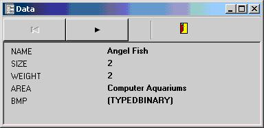

This tutorial guides you to the creation of a simple report. A image is shown to help you understand each step.
Start Report Manager Designer and select New option in the File Menu. Select the detail section and you will see a printable clean area.
Now you must connect to a database and open a dataset, select Data Access Configuration in Report Menu. Then select a database driver and a database connection name. If you select the BDE driver the BDE alias is the connection name, if you select DBExpress you must select a DBExpress connection.

After selecting the database driver you must add a dataset, usually you select an alias for the dataset and execute a query to select records:

You can view the result of executing the query by clicking Show Data button.

Now click Ok button. It's very important that you select the subreport and assign the dataset.

Now it's a good moment to save the report to a file.
Now you can go to dropping fields turorial section.